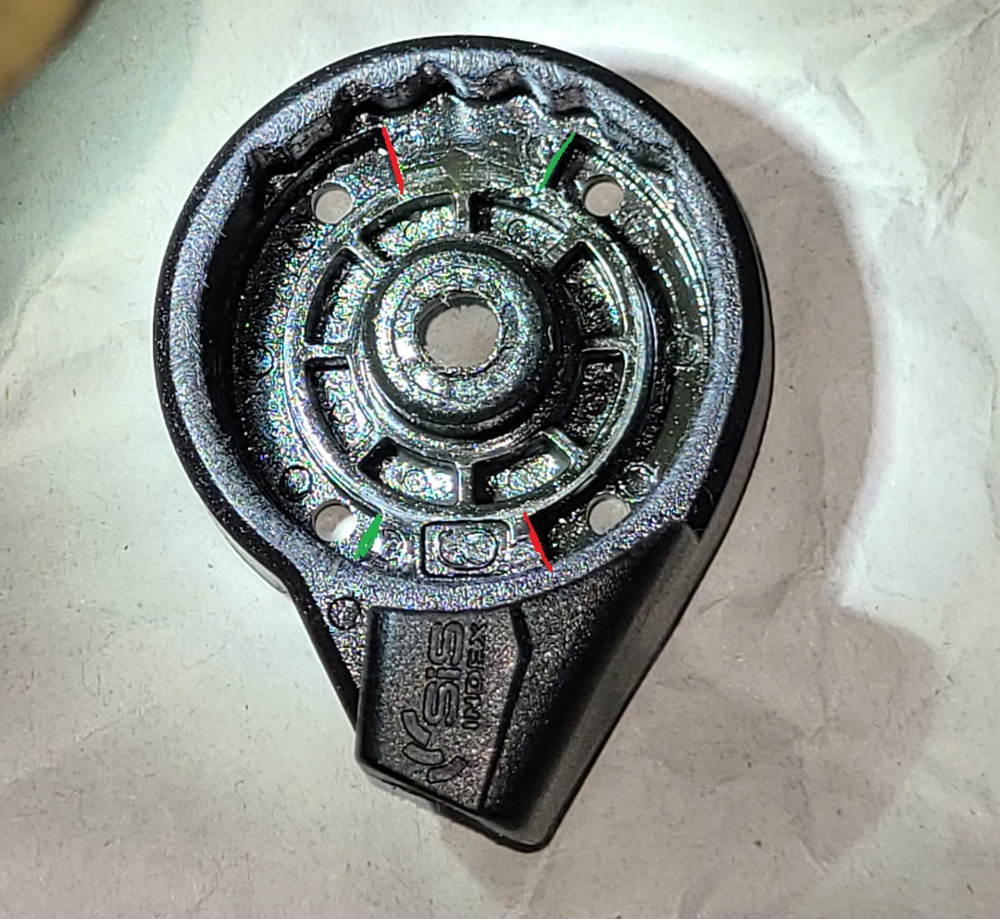
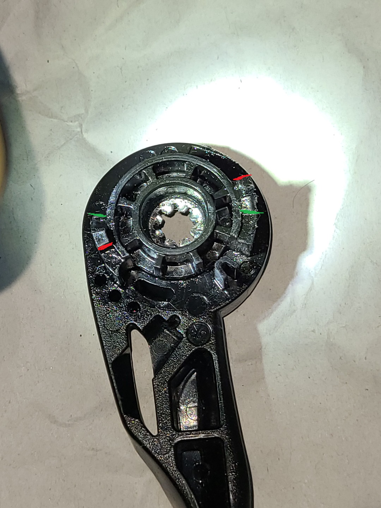
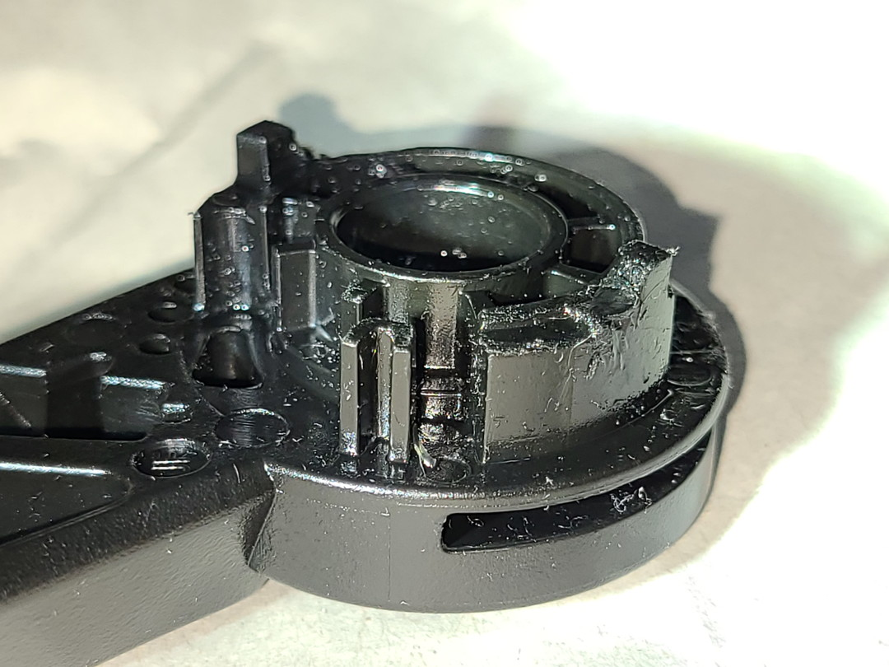
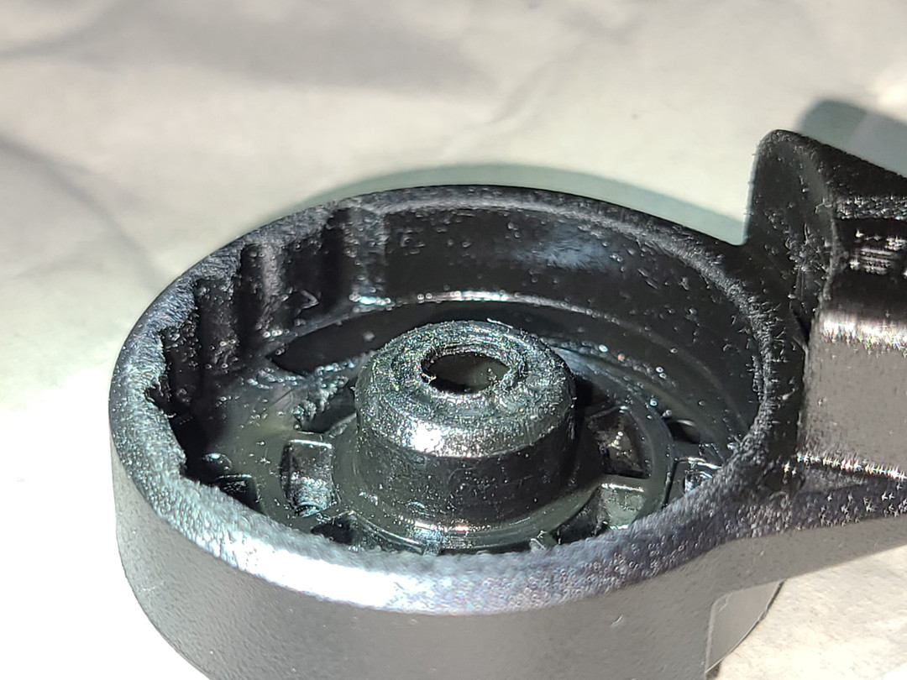
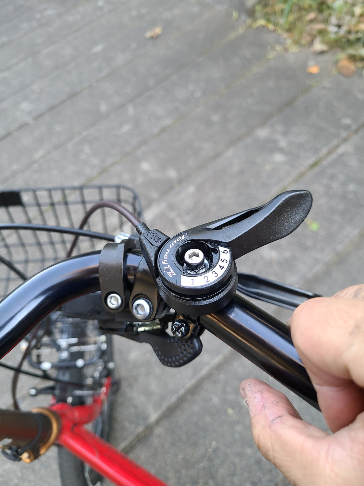
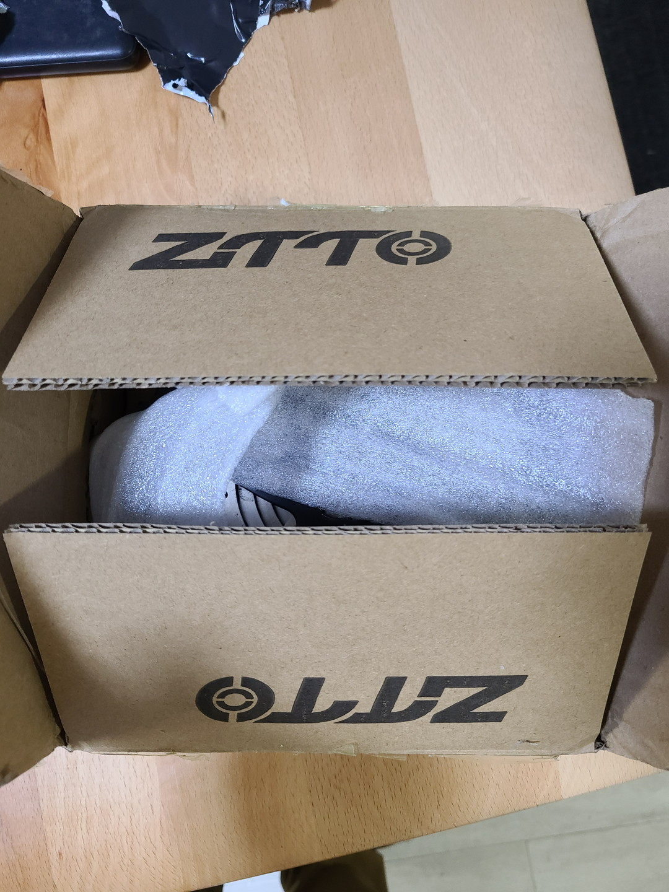
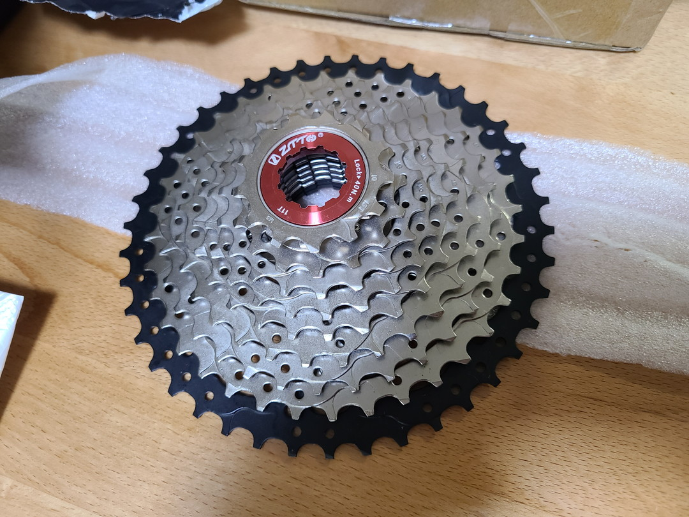

投稿日2022-11-15
フリクションレバーとは
前回の続き。そもそもフリクションレバーとは、めちゃくちゃ単純で自分で好きな量ワイヤーを引いてディレーラーを動かすシフターのことを指す。 それに対してインデックスシフターというのがほとんどの自転車についてる1速2速……とどのくらいワイヤーを引くか予めシフターが決めている機構のこと。自分もインデックスシフターしか使ったことがなかったので今回は感じたことを踏まえつつ自作シフターの作り方の補足を書いていこうと思う。
参考サイト
前回紹介したように基本的な部分はこちらのサイトを参考にしている。
また、どちらかというとネットで定番のシフターはSL-A050の方なので比較検討してみてもいいかもしれない。
用意したもの
- SL-TZ500-6R 参考サイトでは7速用を使っていたが在庫切れだったので6速用を使用した。そもそも3速用はもとからフリクションだから実はそっちのほうがいいのかもしれない。
- Y字ドライバー シフター中央にはY字ボルトが使われているためそれを外すのに使った。絶対に素人にいじらせないというシマノの強い意志を感じる。なお参考サイトではこじ開けていたのでそれでもいいと思う。ちなみに私はドライバーがあったので普通に外した。
- 六角穴付M5ボルト15mm Y字ボルトの代わりに差す。ネジ穴は正直お好みで。
- ワッシャーとナット スキマを塞ぐのに使う。自分は平ワッシャーと歯付座金・内歯タイプをそれぞれ1つづつ使用した。これが正しいのかは知らない。
- プラスチックを削るもの 自分はワイヤーカッターと紙やすりを使った。ダイヤモンドやすりのほうがいいかもしれん。
作業
改造後の画像になってしまうがポイントだけ紹介する。
まずボルトを外すと赤いキャップや留具が出てくるがそれはいらない。

このふたつに加工をする。

まずは設置した時に下になる部分から。
赤の部分が全く引いてない状態、要はトップ・ギアのときのストッパーになっている。
緑の部分が一番引くローの部分。

次に上側。同じく赤がトップ、緑がロー。上下の飛び出してる部分がストッパーになって引き量を決めている。
なので緑であるロー側を削ればそれだけワイヤーを引く量が増やせというシンプルな構造になっている。

参考にしたサイトでは上下どちらも切っていたが自分は上側をワイヤーカッターで半分くらいに切断してやする方法を試してみた。
実は9速スプロケットよりも10速の方が幅が短いのでこれで済んだのかもしれない。まあ、いい塩梅にやってみてほしい。

あとワッシャーを挟みたかったのでヤスリで下側真ん中をだいぶ削った。そうしないとレバーの操作感がぎこちなかった。
あとはほぼ参考サイト通りにやってみた。割りとしっかりとボルトを締めないとディレーラーの引きに負けてしまう。組み込んで何度か試しに引いているといい感じにエージングができる。
動作チェック

インストールは特段変化はない。ただこのターニーTZのシフターレバー、下部からワイヤーを通す仕様になってるのは最初戸惑った。ちなみにTourneyTZのシールは一瞬で剥がれてしまった。悲しい。
あとハンドルの留具のボルトにナットをつけて上げたほうが固定力が増すとか細かい工夫もしてるけどそこは適宜やってみてほしい。
ということでアジャストボルトを調整した後変速している様子はこちら。とりあえずこれでシフターさえどうにかなればアルタスで10sは引けるということが証明できた。
感想
自作とはいえフリクションレバーを引いてみてなかなかダイレクトに変速するから面白いなと思った。確かにシフターとブレーキを同時に操作できないのは不便かもしれないがそもそも街乗りでそういう状況になるほど乗り回すことはないだろう。インデックスと違って1つ1つの変速調整を気にする必要もない。選択肢の一つとして全然ありだと思う。流石に昔みたいにチューブに付けて変速は選ばないかもしれいけれど(ああいうクラッシック指向自体は好き)。今回のレバーならブルーホーンにつけて変速するなんて言うのはいい気がする。実際フリクション化しているかは別にしてアマゾンのレビューではブルホーンの角につけてる人がちらほらいた。
戦いは続く
しかし、ターニーでアルタスを引く、チェーンはDeore、ブレーキはAlivioというMTB初級もりもりコンポになってしまった。でも一応MTBで統一してるしいいよね……。もう疲れたよ。
と思ったら届いてしまった。

そう、AliExpressの独身の日初日に頼んだ……

ZTTOの10速11-42Tワイドスプロケットが！わずか一週間で届いてしまった。正直Aliくんのことだから今月下旬になると思ってたのに！
ということでAltus RD-M310にMTBコンポとしての意地を見せてもらいましょうか。次回、アルタス、42Tを引く！の巻。ではまた～。